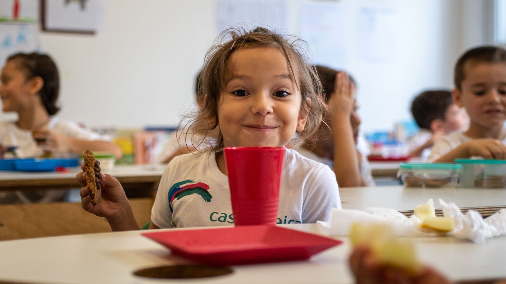
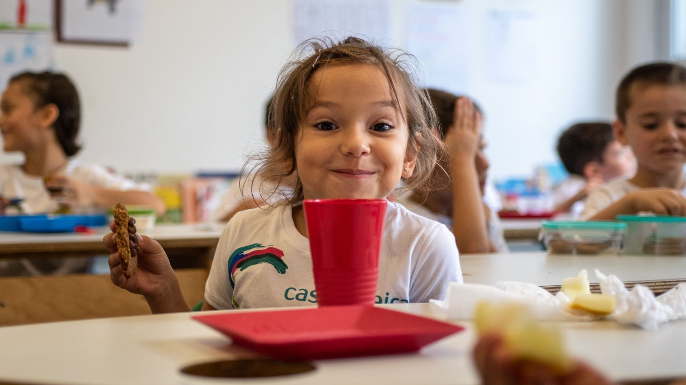

"A comida que deveria nutrir pode estar colocando a
saúde em
risco."
Alimentos contaminados por agrotóxicos são uma ameaça silenciosa para toda a família — principalmente para as crianças. Na NutriCampo, cultivamos alimentos 100% livres de veneno, com respeito à natureza e à sua saúde.
Cultivo responsável e sustentável.
Transparência em cada etapa da produção.
Fornecimento confiável para famílias, escolas, supermercados e restaurantes.
Você já sabe o que fazemos. Agora, descubra por que fazemos.